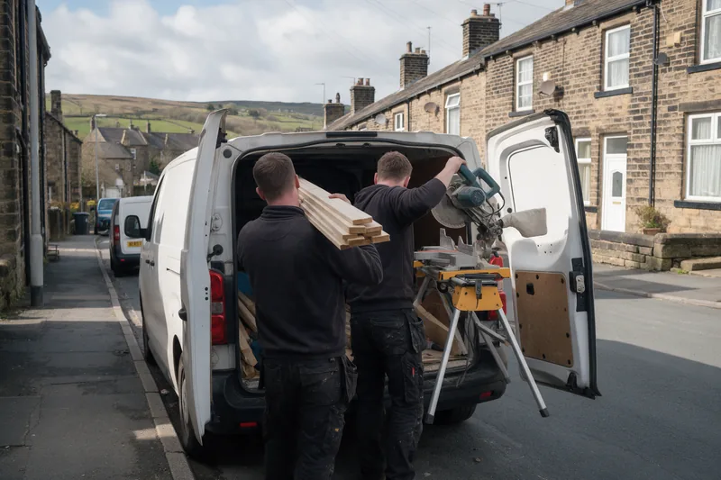
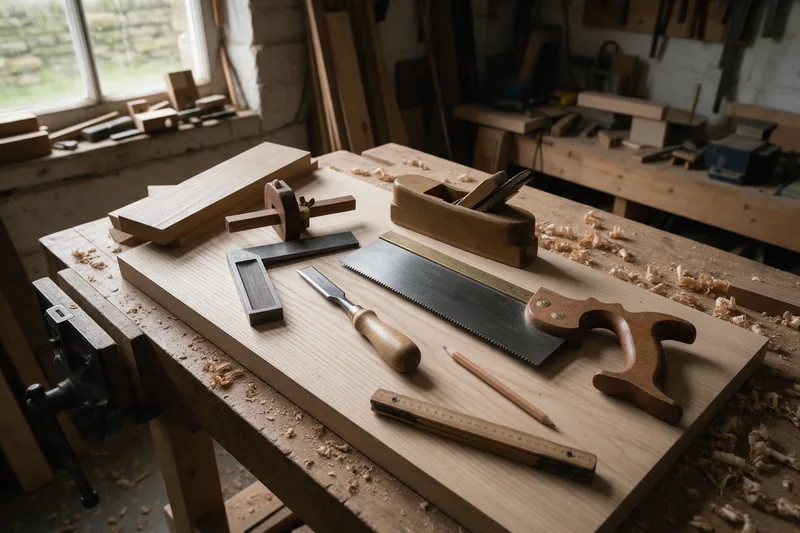

About
A firm that does not exist.
Grainhurst Joinery is invented. There is no workshop, no van and nobody to ring. It is a demo built by Clockwork AI to show a real joinery firm what a site looks like when everything on it is written properly. The story below is made up too, and it is here because a real site needs one and this is what a good one reads like.
The made up version
Two of us and a lad, a van and a rented unit on the back of an industrial estate with a bench, a planer thicknesser and a mitre saw that has seen better days. One of us prefers being in the workshop and one of us prefers being in houses, which works out about right, because somebody has to be measuring next week's job while somebody else is making this week's.
The name came from a street one of us grew up on and the one thing the job is always about, which is reading the grain before you cut. It sounded better than the first three ideas and it fitted on a van door.
The work is ordinary and we are not pretending otherwise. Six internal doors in a nineteen thirties semi. New spindles and a handrail in a hall that has not been touched since the seventies. A wardrobe into an alcove where the wall bows an inch and a half. A rotten sill spliced out so somebody does not have to buy a plastic window. A deck that was laid flat on soil by somebody else and now has to come up.
What we would want a customer to notice
Not the timber. Anybody can buy nice timber. What we would want noticed is that the gaps round all six doors are the same, that there is no gap down the side of the wardrobe, that the skirting is scribed into the corner rather than mitred and filled, and that the stairs stopped creaking and stayed stopped.
And what we would say no to
Fitting new timber onto wet or rotten timber. Hanging a hollow door in an opening that needs an inch taken off it. Telling you a fire door is rated when we have not seen the paperwork for it. Laying a deck flat on the ground with no air under it. Packing a tapering gap with filler and hoping you do not look at it in six months. Every one of those is an easier day on the tools and a phone call nobody wants in two years.

Generated photoGenerated for this demo. The people in it are not real and nobody in any picture on this site is identifiable.

Generated photoA marking gauge, a try square and a sharp chisel do more of this job than any machine.
The three of us
Invented people.
Rhys
The one in houses. Measures every opening in three places and writes it on the lining in pencil, which drives everybody mad until the day it saves a door. Hangs doors quicker than anybody should be able to and cannot walk past a tapering gap.
Elin
The one at the bench. Makes the carcasses, the doors and the stair parts, and will not let a joint leave the unit if it does not close dry. Keeps the chisels sharp enough that nobody else is allowed to borrow them.
Col
Third year apprentice. Does the scribing nobody else wants to do on their knees behind a wardrobe, which is why he is getting good at it faster than either of us did. Also the only one who can get the van out of a Hebden Bridge back street.
Invented for this demo. No real people, no photographs of anybody and no claims about anybody's qualifications or experience.
About this demo
What you are actually looking at.
Everything is fictional
The firm, the people, the jobs, the reviews and the pictures. The firm's phone number is from the range Ofcom keeps for television and film, so it rings nobody, and the email ends in .example, which cannot receive anything.
Nothing here is sent or saved
The quote form checks your answers and previews your photographs in your own browser, then shows a thank you. The chat box is a script with no connection to anything. Nothing leaves your device and nothing is stored.
No prices and no promises
There are no prices anywhere on this site, no guarantees, no schemes, no qualifications, no insurance claims and no response times, on purpose. Everything factual on it is general trade knowledge rather than advice on your property.
Seen enough of the demo?
Have a look at the work, the advice or the quote form. Or ring Clockwork on the number in the bar at the top.